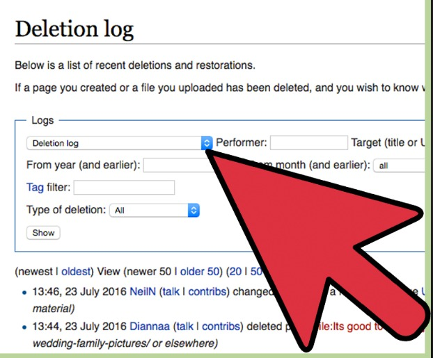

How can I delete uploaded items?
Only Wikipedia:Administrators can delete uploads, but anyone can upload a new item with the same name, thereby replacing the old one. If you want to nominate an uploaded image for deletion, see Wikipedia:Files for discussion. 